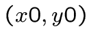
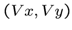
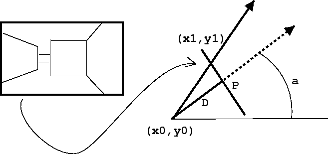

Ensemble de droites
 Pour chaque
Pour chaque  de notre image, on crée une droite passant
de notre image, on crée une droite passant
par notre position, et légerement decalée par rapport à
la direction de vision. On obtient tout un ensemble de droites.
On utilise un plan de projection simulant l'écran vu de dessus,
représenté par un segment de droite. Chaque de notre image
sera un point différent sur ce segment de droite. Les deux points
 et  permettent de déterminer une unique droite
permettent de déterminer une unique droite
définie par un point et un vecteur directeur .
